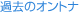

指定自立支援医療機関（育成医療・更生医療） 顎口腔機能診断医療機関



今日はもっとも扱いづらい話題、「治療費」についてお話しします。
一部の先天性疾患や顎変形症は健康保険適応ですが、一般的な矯正治療は健康保険が適応されませんので、自費診療となります。ほとんどの方は、「矯正歯科治療は高い」というイメージを持たれているかもしれません。
治療費は、かみ合わせや歯並びを部分的に治す限局矯正と、全体的に直す本格的な矯正治療によって大きく異なります。一般的に矯正治療と言えば、本格的な矯正治療のことを言います。また、歯並びの前に成長をコントロールしたり、発育に悪影響を及ぼす傷害や、悪習癖を除去するための早期治療を一次治療、その後の機能的咬合の確立を二次治療と分けて料金を設定することもあります。
いつ、どのような装置を使用するのか、精密な検査によって、その患者さん一人ひとりの治療方針が決定され、費用を算出し見積もりを提示します。ですから、実際の治療費は、お気軽に専門医に相談してください。
さらに、決定された費用の請求においても、矯正装置を含めて治療全体を一括計算する場合（一般的には初診料、検査料、診断料、矯正治療費、調整料などを設定している）と、装置ごとに料金を定めている場合に分かれます。国立大学病院の矯正科は全国一律で後者の場合に当たり、装置ごとに細かく設定されています。
矯正歯科専門開業医の場合は平均すると、国立大学と同等か、安めに設定されている場合が多いと思われます。治療期間の決定は、料金の他に、相談時の説明に納得がいくか、その先生の信頼性があるか、転勤などの際の転医に対応できるクリニックであるか、などを考えて決定するのがよいでしょう。